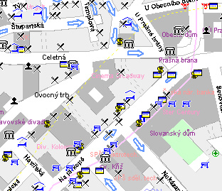

Upozornění
Tato stránka není aktuální. Nachází se zde pouze proto, že mohou existovat stránky, které na ní odkazují. Použijte prosím navigaci v hlavním menu stránky k nalezení aktuálních informací.
Upozornění
Tato stránka není aktuální. Nachází se zde pouze proto, že mohou existovat stránky, které na ní odkazují. Použijte prosím navigaci v hlavním menu stránky k nalezení aktuálních informací.
| NAVŠTIVTE NÁS |
| Knihovna PedF UK, Magdalény Rettigové 4, Praha 1 |
| Jak se k nám dostanete? Ze stanice metra Můstek (trasa A): tramvají č. 3,9,14,24 ze stanice Václavské náměstí do stanice Lazarská. Ze stanice metra Národní třída (trasa B): tramvají č. 9 ze stanice Národní třída do stanice Lazarská, nebo bezbariérovým výtahem přímo do ulice Magdalény Rettigové. |
 |
| Studovna anglického jazyka, Celetná 13, Praha 1 |
| Jak se k nám dostanete? Ze stanice metra NÁMĚSTÍ REPUBLIKY (trasa B) dále pěšky, projdeme Prašnou bránu nebo ulici U Obecního domu a pokracujeme ulicí Celetnou. |
 |